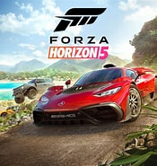

Mejores Juegos sencillos y divertidos
En uno de los primeros puestos esta CALL OF DUTY: WARZONE MOBILE

Call of Duty Warzone Mobile finalmente se lanzó este año, siendo uno de los más FPS estilo Battle Royale para móviles más esperados.
En él te encontrarás con gráficos de última generación, acción frenética y todos los mapas icónicos de la serie de siempre. Fue creado por Activision
El siguiente en la lista se llama eFootball 2024 Mobile

eFootball es una serie de videojuegos de simulación de fútbol asociación desarrollados y publicados por Konami.
Ha sido completamente renombrado de la serie original Pro Evolution Soccer (conocida como Winning Eleven en Japón).
El primer año del juego, titulado eFootball 2022, se lanzó el 30 de septiembre de 2021.
Más tarde se cambió al segundo año del juego, eFootball 2023, el 25 de agosto de 2022 y al tercer año del juego, eFootball 2024, el 7 de septiembre de 2023.
Este juego forma parte del Campeonato Mundial de la Federación Internacional de Esports y de la Liga Europa del Norte y del Este (NEEC).
A continuacion Forza Horizon 5
Forza Horizon 5 es un videojuego de carreras multijugador en línea desarrollado por Playground Games y publicado por Xbox Game Studios.
Es el quinto título de Forza Horizon y la duodécima entrega principal de la serie Forza.
El juego está ambientado en una representación ficticia de México.